Below is what I have actually built and run for clients across real estate, agriculture, travel and construction. Where a number comes from an Ads Manager screenshot, it is marked verified and the screenshot is on the page. Where a number comes from the client rather than a dashboard I can show you, it is marked client-attested. Nothing here is estimated.
"The deal did not come easy, but your expert guidance and well-structured ads brought in the right leads. With consistent follow-ups, we closed it." Iyabode Abiola, Natweng Realtors, publicly on Facebook
Tap any row to jump to it. Every case opens with a plain summary and the numbers, then expands if you want the detail.
The figure appears in a platform dashboard and the screenshot is published on this page, with the ad account number removed.
The client told me the outcome and I believe them, but the proof sits in their CRM and their bank, not mine. I will not present it as though I measured it.
I built the system. Performance data belongs to the client and has not been released for publication. The work is shown; no numbers are claimed.
If a marketer shows you numbers without telling you which of these three they are, that is the thing to ask about.
Meta campaigns built from audience research and original creative, measured on cost per qualified lead rather than reach.
Opt-in pages, sales pages, lead magnets, nurture sequences and the tracking that connects them.
Custom-coded sites built as sales instruments, deployed live, with credentials and trust evidence structured into the page.
Realtor networks, WhatsApp communities and sales-team enablement, so the client is not renting every customer from Meta forever.
Rebuilt the campaign and the follow-up behind it. The client closed the deal and credited it publicly, under her own name, where anyone can read it.
The situation: Natweng Realtors had good inventory and was spending on Facebook without converting the leads into inspections. Leads arrived and went cold.
What I did: Rebuilt the campaign from the audience up, then rebuilt what happened after the click. New research, new pre-frame copy, and a WhatsApp-first follow-up sequence carrying prospects from enquiry to inspection.
The result: The client closed the deal and said so publicly on Facebook, under her own name, where anyone can read it. Iyabode Abiola puts the deal value at ₦40M. That figure is hers, not from a dashboard I control, so it is marked client-attested. What the public comment independently confirms is the close itself and what she credits it to.
"The deal did not come easy, but your expert guidance and well-structured ads brought in the right leads. With consistent follow-ups, we closed it."
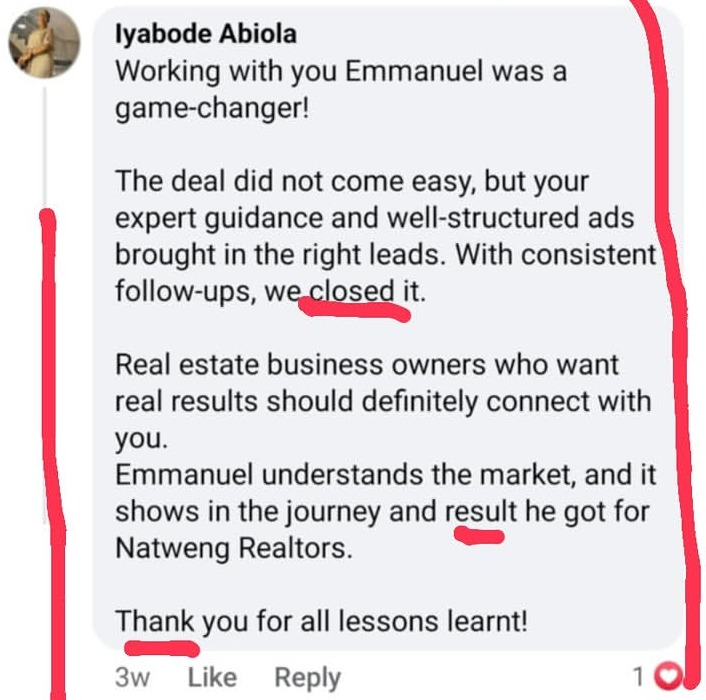
Farmland investment offers sold through webinars rather than hard-sell ads. 4,579 leads, at a verified cost per lead as low as ₦171.
The situation: Landberry and GLI Farms were selling farmland and plantation investments into a market that treats agriculture offers with suspicion, for good reason. Cold traffic does not hand over a phone number for a plantation unless the offer earns it first.
What I did: I built a trust-first acquisition playbook rather than a hard-sell one. Webinar registration as the primary entry point, so prospects met the principals before being asked for money. Separate campaigns for separate readiness levels: beginner realtors, advanced realtors, network marketers, cold land buyers and the parents audience for the Coral Kids offer. Every registration flowed into a WhatsApp group where the offer was explained across days rather than in a single ad.
The result: Across the campaigns visible in the screenshots below, 4,579 form leads at ₦2,105,187 in spend. The strongest cold-traffic campaign, Golden Acres in Obafemi Owode, delivered 372 leads at ₦197.62 each. The Golden Acres webinar campaign hit ₦170.59. The largest single campaign, the GLI realtor webinar, brought 1,742 leads at ₦448.43. Behind it all, three WhatsApp communities totalling 987 members, and a 22-file export pile consolidated down to 3,744 unique deduplicated contacts.
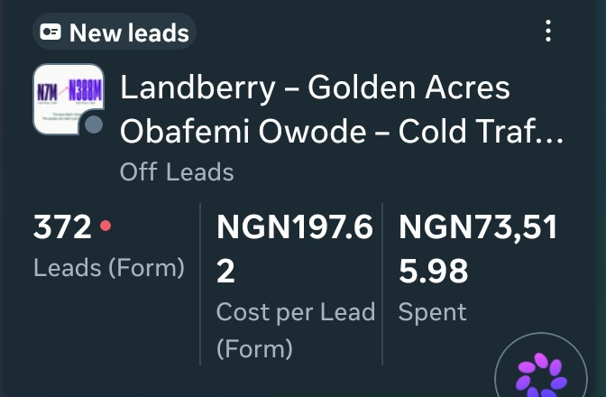
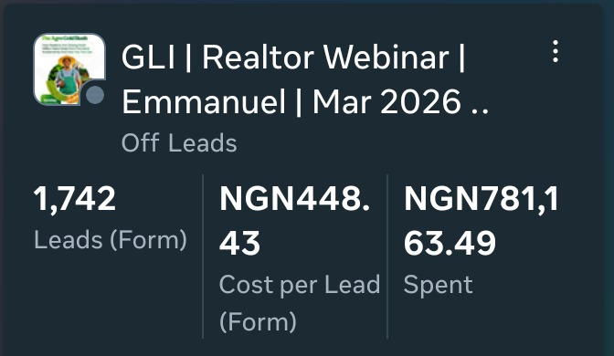
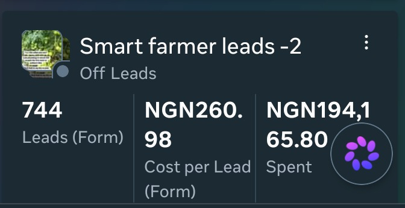
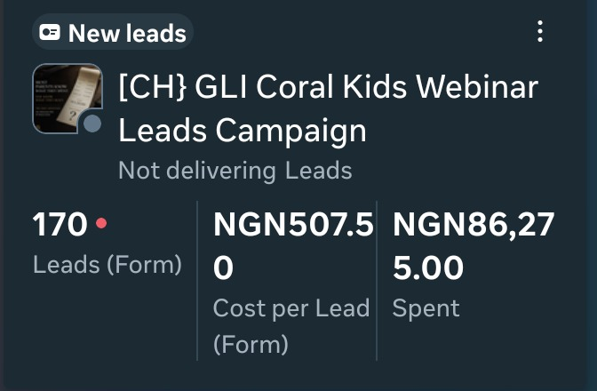
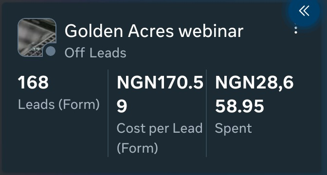
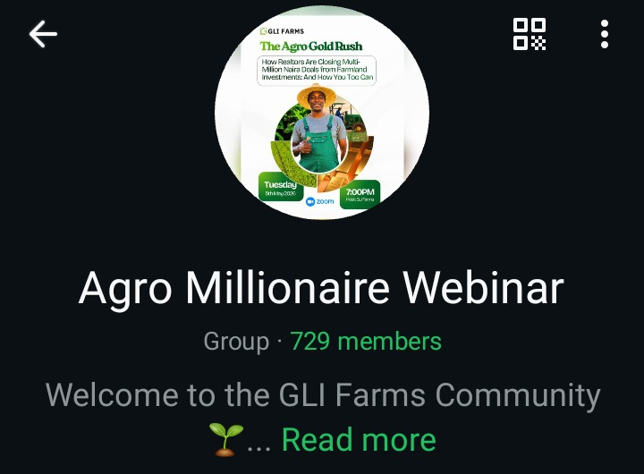
Lead volume is mine to prove and I have proved it. Conversion from lead to closed sale sat with the client's sales team and their CRM, so I am not publishing a revenue figure for this engagement.
Built the same client a realtor network so they stopped buying every single buyer from Meta.
The situation: The same client was buying every single buyer through paid ads. That works until costs rise or an algorithm shifts, and then the pipeline is gone. There was no owned distribution.
What I did: I ran a parallel recruitment engine alongside the buyer campaigns: recruitment ads segmented by experience level, onboarding sequences, training content, a private community and a commission structure. The screenshots in chapter one show those recruitment campaigns by name, including the beginner and advanced realtor funnels.
The result: The client reports a network of over 2,000 realtors and 10 acres of land sold through realtor-driven sales. I generated and can prove the recruitment leads. The network size and the acreage are the client's figures, from the client's records.
Recruitment lead volume: verified. Network size and sales: client-attested.
A Lagos professional and a Nigerian abroad are not the same buyer. Two separate funnels, 937 leads, every local campaign under its cost benchmark.
The situation: A Lagos developer was marketing waterfront plots to two buyers who share almost nothing. A Lagos professional with ₦5M and a Nigerian abroad with a currency advantage do not respond to the same page, the same proof, or the same price anchor. Averaging them loses both.
What I did: Built two complete paths. Separate ad angles, opt-in pages, lead magnets, sales page copy and objection handling. The diaspora path led on verification, remote inspection and documented title, because the buyer's real fear is being defrauded from four thousand miles away. The local path led on the infrastructure corridor and the entry price. Benchmarks were set and reported separately per audience, because a ₦20,000 diaspora lead and a ₦2,000 local lead are not comparable and should never be averaged into one number.
The result: Across the buyer campaigns visible in the dashboard below, 784 local leads and 153 diaspora leads. Every local campaign came in under the agreed ₦2,000 benchmark, the cheapest at ₦362. Three of the four diaspora campaigns came in under the agreed ₦20,000 benchmark, the cheapest at ₦6,091.
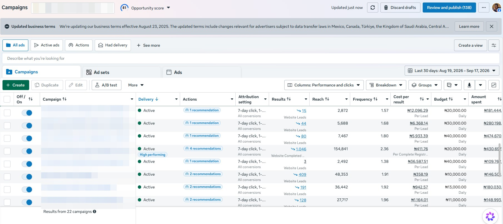
One diaspora campaign was running above its benchmark at the time of these screenshots and was rebuilt with new creatives rather than left to spend. I would rather show that row than crop it out.
Four estate funnels on one tracking spine, plus a recruitment engine that has registered 1,065 realtors at ₦413 each.
The situation: Three further estate offers needed to go live inside a fixed window, each with a different buyer, price point and qualifying question. One was a mortgage product rather than an outright sale. Alongside them, the developer needed a sales force, not just buyers.
What I did: Built each offer as a complete funnel rather than a landing page: opt-in, lead magnet, sales page, ad sets and nurture. The mortgage offer was built as a qualification path rather than a sales path, because that product should ask whether the buyer qualifies before it asks for a deposit. Conversion tracking ran server-side into the client's CRM so lead source stayed attached to the record instead of dying at the form. A separate recruitment campaign ran in parallel to build the realtor base.
The result: The recruitment campaign has produced 1,065 completed realtor registrations at ₦412.56 each, against an agreed benchmark of ₦1,000. It is the highest-volume campaign in an account currently running 22 campaigns. Two things I declined to publish along the way: a brochure claim of guaranteed annual returns, and celebrity imagery without written usage rights.
Registration counts and costs are visible in the screenshots above. What happens after registration sits in the client's sales records, so no closing figures are claimed here.
Website, realtor engine, tracking and ads built as one system rather than four separate jobs.
The situation: Chuks Properties Academy Limited sells land in Asaba and needed more than a brochure site. They needed a way for realtors to sell on their behalf and a way for buyers to arrive already warm, with both measured properly.
What I did: Built the twelve-page site end to end, including a plot availability board, self-hosted fonts and WhatsApp-first calls to action throughout. Then the engine: a Realtor Hub where realtors generate their own buyer referral links and pull sales materials, and a recruitment landing page with a two-step form that drops new realtors straight into the CPAL community group.
Tracking runs on Meta Pixel plus the Conversions API through a serverless function that hashes buyer details, formats Nigerian phone numbers correctly and deduplicates against the browser pixel, with realtor registrations kept as a separate event from buyer leads so the two are never confused. I also produced the buyer and realtor ad creatives, video scripts and ad copy, then ran the campaigns.
The result: 47 realtor registrations at ₦343.14 each and 27 buyer leads, from ₦70,400 in spend. Hosting, domain and buyer data sit in the client's own accounts, not mine, so they own the asset outright.
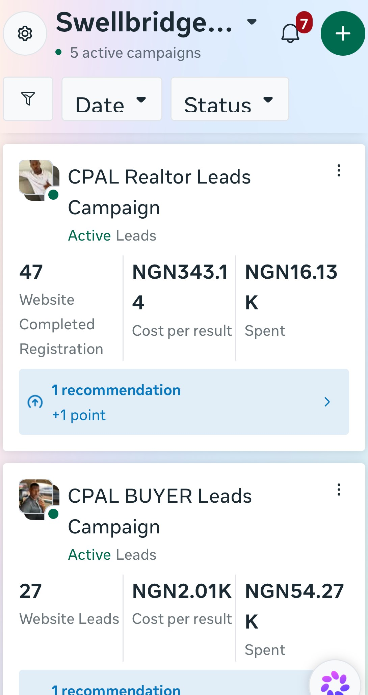
Live at cpalgroup.com, with the realtor engine at cpalgroup.com/realtor-hub. Swellbridge is credited in the footer.
One holding company, two unrelated divisions, one site that puts each visitor in the right world within a second.
The situation: TONDIV Group runs two businesses that share nothing operationally. TONDIV Construction does architecture, civil and structural engineering, real estate development and project supervision. TK Ventures moves people, parcels and freight between Nigeria and the Republic of Benin, plus hotel and vacation arrangements. Anthony needed to send a construction client and a transport client to the same company without either feeling they had landed in the wrong place.
What I did: Built a multi-page site where each division owns its own deep page and its own colour zone, navy and gold for construction, navy and green for TK Ventures, so a shared link lands the visitor inside their world immediately.
The trust architecture was built on things that can be checked. Building since 2008. Four years of study, practical training and site work in Türkiye, covering structural method, interior finishing, security systems, joinery and flooring. Five named projects with real addresses. Direct access to the principal engineer, stated plainly, because in this market that is the actual differentiator.
Two project photographs showed visible stop-work markings. I excluded them and told the client why. Every enquiry form, construction, transport and general, delivers a pre-formatted WhatsApp message rather than an email that waits in an inbox.
The result: Live at tondivgroup.com, deployed through GitHub and Netlify with DNS pointed and HTTPS provisioned. Swellbridge is credited in the footer.
A 15-page travel site built on credentials a stranger can verify, instead of the stock beach photography every competitor uses.
The situation: Mrs Demi James runs Betini Trips & Tours Services Ltd, an outbound travel operator in Lagos handling visas, flights, tours, faith journeys, study and medical travel, and corporate groups. Her market is crowded with operators who look identical online and a minority who take deposits and disappear. Every competitor uses the same beach photography. None of it answers the only question a Nigerian traveller is actually asking, which is whether this company will still exist after the money leaves the account.
What I did: Full build, brand identity through to live deployment. I took the positioning from her own words: travel project managers, not travel agents.
Then I built the whole site around credentials a stranger can verify independently. NATOP membership, signed July 2025. CAC incorporation, RC 2000269, registered 16 November 2022. Akwaaba African Travel Market attendance. VIP Buyer accreditation at an international trade fair. Participation in a Turkey operator workshop.
One decision mattered more than any design choice. Her CAC certificate showed her Tax Identification Number. Publishing the image would have exposed it permanently, so I put the RC number on the page as plain text with a link to the public CAC register instead. Same proof, no exposure. Trust evidence that leaks the client's data is not trust evidence.
Fifteen pages: home, a services hub with six service detail pages, destinations, about, journeys, FAQ, contact, thank you, privacy and terms. Eight WhatsApp deep links placed by context, each pre-filling a message specific to the page it sits on, so she knows what the enquiry is about before she reads a word. The contact form uses a honeypot rather than a CAPTCHA, a deliberate choice, since CAPTCHA on Nigerian mobile is a conversion tax. WhatsApp taps fire a tracked event labelled by placement, so within a fortnight she can see which of the eight buttons is earning its place.
Typography carries the voice: Sora for structure, Inter for body, and Fraunces reserved only for her own quoted words and one emphasis word in the hero.
The result: Live at betinitrips.com, deployed through GitHub and Netlify with clean URL routing across all fifteen pages and the apex redirected to www so search authority is not split. Swellbridge is credited in the footer.
Produced a 44-page sales proposal and an accompanying funnel plan for a Benin City property business, designed mobile-first on the assumption the decision-maker would read it on a phone rather than at a desk. Published here as scope of work. No outcome is claimed.
"Working with you Emmanuel was a game-changer! The deal did not come easy, but your expert guidance and well-structured ads brought in the right leads. With consistent follow-ups, we closed it. Real estate business owners who want real results should definitely connect with you. Emmanuel understands the market, and it shows in the journey and result he got for Natweng Realtors. Thank you for all lessons learnt!"
"Emmanuel A. is highly skilful, creative and very efficient in handling my job assignments to him. I recommend him to anyone who desires prompt services and customised dynamism to his brand, and growth approach. He is very result oriented. You will enjoy working with him."
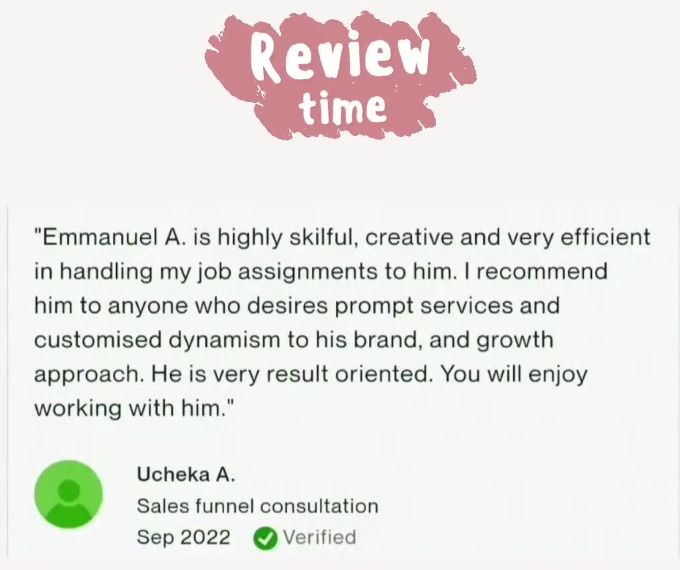
A client running a partnership offer at ₦500,000 messaged to say two partners had signed from the campaign, one in Abuja and one in Delta, and noted at the time that payment had not yet come through. A later message reported another Abuja signing and asked to shift spend away from Abuja toward Lagos and Port Harcourt.
I am publishing this as what it is: signed partners with payment in progress, and a client asking to redirect budget because the campaign was working in the wrong cities. It is not a closed-revenue figure and I will not present it as one. The reason it is here is that "please move my budget, this city is converting too well" is a specific kind of signal you cannot fake.
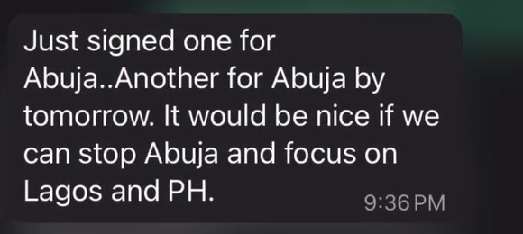
Opened on the fact that Lagos has exactly two coastlines. Purpose: replace a generic scarcity claim with a geographic one the buyer can verify, so scarcity stops sounding like sales pressure.
Purpose: win a large engagement while correcting the client's own targets. Their lead volume goal required roughly nine times the ad budget they had, so I repositioned diaspora as a revenue ambition rather than a volume one. Telling a prospect their number is wrong, in the document that asks for their money.
Purpose: give developers a way to audit their own online credibility, so the diagnosis arrived before the pitch.
Written for warm web design leads. Purpose: recover enquiries that went quiet without discounting.
"Building Nigeria. Connecting West Africa." Purpose: one line that legitimately holds two unrelated divisions together.
"Travel project managers, not travel agents." Purpose: her own words, promoted into positioning, which is almost always better than an agency invention.
Purpose: help travel and relocation consultants qualify enquiries before giving away the consultation.
Purpose: let a prospect discover their own budget shortfall by moving a slider, rather than being told.
Not the demographic. The specific sentence running through the buyer's head at the moment they hesitate. For diaspora property it is fear of fraud at distance. For farmland it is suspicion of the whole category. Everything downstream is built on getting this right.
If the objection is fear of fraud, the offer leads with verification. Better copy cannot rescue an offer aimed at the wrong fear.
A reason this works that the prospect has not heard before, stated plainly enough to repeat to a spouse.
Ad, opt-in, magnet, sales page, nurture, tracking. A great ad pointed at a broken page is wasted money, and it is usually the page that is broken.
Separate campaigns, separate benchmarks, separate reporting. Averaged cost per lead across unlike audiences is a number that hides the truth.
Cost per qualified lead by audience. Not reach, not impressions, not engagement.
Meta campaign strategy, audience research, creative direction, lead form design, retargeting, budget allocation, cost-per-lead optimisation, server-side conversion tracking.
Opt-in pages, sales pages, lead magnets, email sequences, WhatsApp flows, sales scripts, proposals, ad copy in volume.
Custom-coded multi-page sites, mobile-first, clean URL routing, schema markup, GitHub and Netlify deployment, DNS and HTTPS, Meta Pixel, CAPI and GA4, CRM integration.
CRM configuration, lead deduplication and consolidation at scale, community building on WhatsApp, realtor recruitment and enablement, reporting.
Tell me what you are selling and who is failing to buy it. I will tell you plainly whether paid acquisition is the right lever, and if it is not, I will say that too.
Message me on WhatsApp Book a call